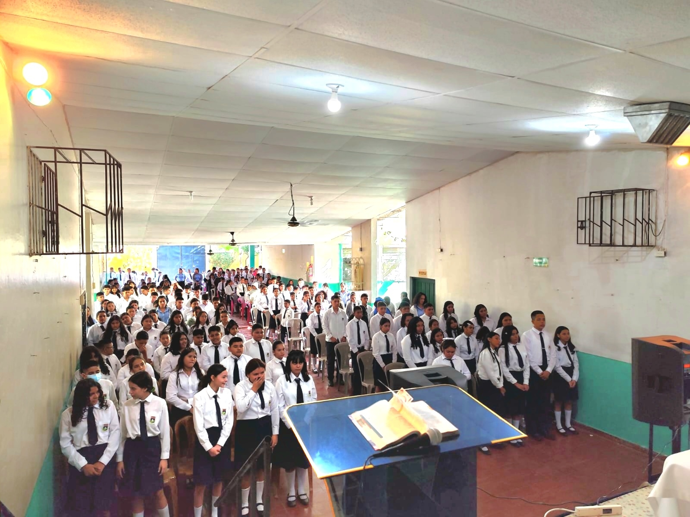

Formación católica de calidad, desde Parvularia hasta Noveno Grado
El Centro Escolar Católico "Fray Cosme Spessotto" acompaña a las familias del Distrito de San Luis La Herradura en la formación espiritual, humana y académica de sus hijos, inspirados en los valores evangélicos, marianos y franciscanos.

Una comunidad educativa con identidad propia
Formamos personas íntegras a partir de nuestra misión, visión y del carisma franciscano que da identidad a la institución. Conoce nuestra historia, a nuestro fundador y el modelo educativo que guía cada etapa del aprendizaje.
Conocer más
Modelo Educativo Integral
Formación académica, en valores, en fe y acompañamiento psicológico se entrelazan en cada nivel, junto con inglés e informática desde Parvularia hasta Noveno Grado.
Conocer másDos áreas, un mismo acompañamiento
Parvularia y Primer Grado cuentan con un área propia e independiente, físicamente separada del área de Educación Básica.

Área de Parvularia y Primer Grado
Parvularia 4, 5, 6 años y Primer Grado, en un espacio propio pensado para los más pequeños.
Conocer más
Área de Educación Básica
Primer, Segundo y Tercer Ciclo (1° a 9° grado), con instalaciones propias para esta etapa.
Conocer másNuestra Vida Estudiantil
Banda, cachiporras, actividades pastorales, institucionales y mucho más: así celebramos y crecemos en comunidad.


Actividades pastorales
[Agregar descripción real de retiros, eucaristías y celebraciones.]
Ver más